Benchmarks¶
Fourteen models on four tasks, at equal parameter count per task; the fourth, super-resolution, adds the deep image prior and three interpolations as references. The tables are results/<task>/table.md as scripts/report_paper.py writes them from the runs in logs/; the figures are the paper's. Bold marks the best value in a column and italics the second; ± is one standard error over the signals, after removing each signal's own level (a paired standard error); IoU, which saturates near 100 % on every shape, takes the plain standard error over the shapes.
Notes on the rows:
- A name in parentheses is the variant a row runs where its kind has several: FUTON's basis, and the backbone of F-INR and FreSh; the configs call the two FUTONs
FUTON-sincandFUTON-cosine. - TensoRF is the variant its authors recommend for the dimension: CP on images (the only one in 2D) and VM on volumes and radiance fields; both are in the configs.
- MFN is the GaborNet of the two networks of its paper, and WIRE the real Gabor variant (
inro.RealWIRE) from the WIRE paper and code. - F-INR (SIREN) gives each coordinate its own SIREN, built and initialized as in its authors' image code, and combines them per channel by a CP decomposition. Their settings do not fit the budget, so we tuned at equal size what they leave open: the split between width and rank (in 2D the most rank a width allows, one more than the width; width 96 and rank 259 on volumes, width 32 and rank 39 on radiance fields), the first layer's frequency (200 on images, above their 100, and 100 elsewhere) and the decomposition, CP rather than the tensor train they pick for shapes and radiance fields. Neither the positional encoding of their image experiments nor the SIREN of their shape code helps at this size. Their paper fits radiance fields with per-axis hash grids; here the axes are SIRENs on every task.
- FreSh (SIREN) is the SIREN row with its first-layer frequency chosen per signal before training, by matching the spectrum of the untrained network's output to the signal's, and the search counts toward its training time. Its paper covers images and radiance fields; on volumes it reads the 3D spectrum of the occupancy grid, and on super-resolution that of the low-resolution image, our two adaptations. On super-resolution, where the SIREN row runs every layer at a tuned frequency of 120, FreSh keeps it in the later layers.
Accuracy and costs come from the same runs. Every model is compiled with torch.compile and trained on an A100 after an untimed warm-up pass that compiles it. The training time counts the training steps alone; inference throughput and memory are the medians over a run's evaluations, for a radiance field over its 200 test views, each rendered whole in one pass, and training memory is the run's peak. Each cost in the tables and figures is the median over a task's signals.
Images¶
24 Kodak images at 768 × 512, about 197k parameters per model, 1000 steps, each on the whole image, scored on every pixel.
| Model | #Params (k) | Training time (s) ↓ | Training memory (GB) ↓ | Inference throughput (MPix/s) ↑ | Inference memory (GB) ↓ | PSNR (dB) ↑ | SSIM ↑ | LPIPS ↓ |
|---|---|---|---|---|---|---|---|---|
| RFF | 199.7 | 29.8 | 2.08 | 30.7 | 1.21 | 31.28 ± 0.14 | 0.846 ± 0.007 | 0.271 ± 0.007 |
| PE-MLP | 209.2 | 32.8 | 2.11 | 33.2 | 0.81 | 27.86 ± 0.15 | 0.726 ± 0.015 | 0.431 ± 0.008 |
| MFN | 204.3 | 57.3 | 7.67 | 26.8 | 3.22 | 36.72 ± 0.15 | 0.938 ± 0.003 | 0.129 ± 0.003 |
| SIREN | 198.9 | 35.7 | 3.25 | 34.4 | 0.81 | 33.57 ± 0.15 | 0.906 ± 0.003 | 0.192 ± 0.004 |
| FreSh (SIREN) | 198.9 | 39.3 | 3.25 | 34.5 | 0.81 | 34.88 ± 0.14 | 0.922 ± 0.003 | 0.150 ± 0.004 |
| Gauss | 198.9 | 36.6 | 3.64 | 34.3 | 0.81 | 32.33 ± 0.17 | 0.877 ± 0.004 | 0.213 ± 0.004 |
| WIRE | 199.3 | 42.2 | 4.00 | 31.5 | 0.86 | 30.17 ± 0.45 | 0.807 ± 0.017 | 0.260 ± 0.010 |
| FINER | 198.9 | 35.7 | 3.25 | 34.3 | 0.81 | 35.96 ± 0.12 | 0.938 ± 0.003 | 0.120 ± 0.002 |
| Instant-NGP | 205.1 | 3.6 | 0.72 | 198.3 | 0.50 | 36.05 ± 0.22 | 0.932 ± 0.002 | 0.142 ± 0.004 |
| TensoRF | 202.0 | 27.8 | 1.79 | 55.2 | 0.81 | 35.48 ± 0.13 | 0.920 ± 0.002 | 0.161 ± 0.003 |
| GA-Planes | 199.9 | 19.0 | 1.32 | 68.1 | 0.81 | 32.23 ± 0.23 | 0.878 ± 0.004 | 0.227 ± 0.005 |
| F-INR (SIREN) | 198.8 | 7.1 | 2.70 | 136.3 | 1.34 | 29.35 ± 0.12 | 0.786 ± 0.007 | 0.343 ± 0.006 |
| FUTON (sinc) | 197.4 | 5.4 | 0.67 | 177.6 | 0.54 | 37.44 ± 0.09 | 0.949 ± 0.003 | 0.108 ± 0.003 |
| FUTON (cosine) | 197.4 | 5.4 | 0.67 | 175.6 | 0.54 | 38.14 ± 0.11 | 0.956 ± 0.003 | 0.098 ± 0.004 |
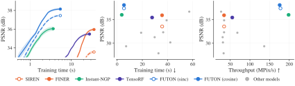
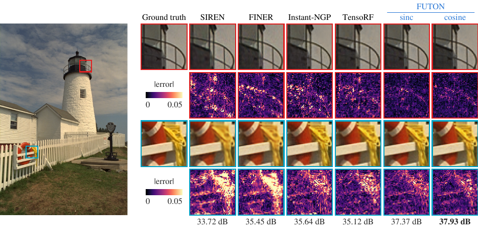
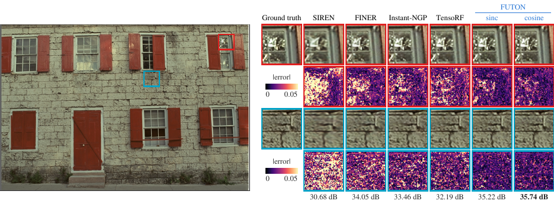
Occupancy¶
Five Stanford shapes voxelized at 256 samples per unit length and cropped to their bounds (2.1 to 7.9 million voxels, the longest side 231), about 131k parameters per model, 1000 steps, each on \(2^{18}\) random voxels, scored by IoU on every voxel.
| Model | #Params (k) | Training time (s) ↓ | Training memory (GB) ↓ | Inference throughput (MVox/s) ↑ | Inference memory (MB) ↓ | IoU (%) Armadillo ↑ | IoU (%) Dragon ↑ | IoU (%) Happy Buddha ↑ | IoU (%) Lucy ↑ | IoU (%) Thai Statue ↑ | IoU (%) Mean ↑ |
|---|---|---|---|---|---|---|---|---|---|---|---|
| RFF | 132.2 | 11.7 | 1.04 | 48.2 | 819 | 99.97 | 99.97 | 99.91 | 99.79 | 99.93 | 99.91 ± 0.03 |
| PE-MLP | 132.3 | 15.4 | 1.02 | 48.2 | 520 | 98.30 | 98.27 | 98.86 | 95.46 | 98.01 | 97.78 ± 0.60 |
| MFN | 138.0 | 27.4 | 3.77 | 38.3 | 1359 | 99.47 | 98.52 | 98.49 | 98.98 | 99.27 | 98.95 ± 0.20 |
| SIREN | 132.9 | 17.1 | 1.62 | 50.6 | 551 | 99.02 | 99.60 | 99.85 | 99.45 | 99.09 | 99.40 ± 0.16 |
| FreSh (SIREN) | 132.9 | 41.6 | 1.62 | 50.4 | 551 | 99.54 | 99.83 | 99.97 | 99.75 | 99.56 | 99.73 ± 0.08 |
| Gauss | 132.9 | 17.5 | 1.62 | 50.8 | 551 | 99.69 | 99.95 | 99.94 | 99.87 | 99.72 | 99.83 ± 0.05 |
| WIRE | 133.4 | 21.9 | 1.91 | 46.6 | 583 | 99.78 | 99.96 | 99.97 | 99.93 | 99.88 | 99.90 ± 0.03 |
| FINER | 132.9 | 17.2 | 1.62 | 50.5 | 551 | 99.43 | 99.81 | 99.97 | 99.87 | 99.54 | 99.73 ± 0.10 |
| Instant-NGP | 133.2 | 2.6 | 0.53 | 158.0 | 718 | 99.96 | 99.96 | 99.78 | 99.80 | 99.78 | 99.86 ± 0.04 |
| TensoRF | 132.4 | 6.4 | 0.44 | 191.1 | 282 | 99.86 | 99.77 | 99.74 | 99.50 | 99.50 | 99.67 ± 0.07 |
| GA-Planes | 132.0 | 17.8 | 0.58 | 105.8 | 328 | 99.88 | 99.95 | 99.94 | 99.90 | 99.85 | 99.90 ± 0.02 |
| F-INR (SIREN) | 131.8 | 5.9 | 1.65 | 119.9 | 835 | 98.05 | 98.53 | 98.74 | 97.42 | 97.73 | 98.09 ± 0.24 |
| FUTON (sinc) | 130.6 | 7.8 | 0.53 | 123.3 | 526 | 99.97 | 99.98 | 99.96 | 99.95 | 99.90 | 99.95 ± 0.01 |
| FUTON (cosine) | 130.6 | 7.6 | 0.53 | 122.0 | 527 | 99.97 | 99.98 | 99.95 | 99.95 | 99.92 | 99.95 ± 0.01 |
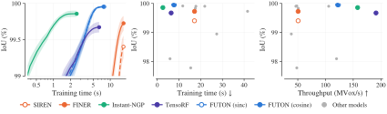
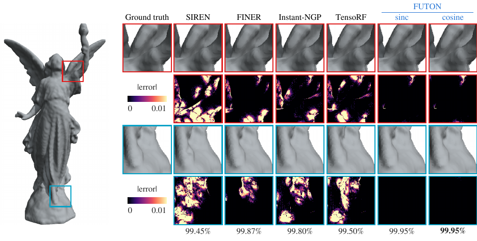
Radiance fields¶
Eight NeRF synthetic (Blender) scenes under FINER's protocol: 200 × 200 views, 25 training views, 25,000 steps of 4096 rays (FINER's protocol trains for 37,500), scored on all 200 test views. Every model is the density network of the same radiance field (15 geometry features, spherical-harmonics direction encoding, a 64 × 2 colour MLP), about 75k parameters in all.
| Model | #Params (k) | Training time (s) ↓ | Training memory (GB) ↓ | Inference FPS ↑ | Inference memory (GB) ↓ | PSNR (dB) ↑ | SSIM ↑ | LPIPS ↓ |
|---|---|---|---|---|---|---|---|---|
| RFF | 74.5 | 179.3 | 2.91 | 38.7 | 2.12 | 28.07 ± 0.30 | 0.928 ± 0.004 | 0.082 ± 0.008 |
| PE-MLP | 75.1 | 201.0 | 3.00 | 37.0 | 2.10 | 27.94 ± 0.21 | 0.931 ± 0.002 | 0.079 ± 0.006 |
| MFN | 75.8 | 275.6 | 9.97 | 35.5 | 3.61 | 28.28 ± 0.17 | 0.932 ± 0.002 | 0.078 ± 0.006 |
| SIREN | 75.2 | 215.5 | 5.08 | 38.4 | 2.14 | 28.53 ± 0.17 | 0.935 ± 0.002 | 0.106 ± 0.008 |
| FreSh (SIREN) | 75.2 | 217.2 | 5.03 | 39.4 | 2.13 | 28.34 ± 0.23 | 0.928 ± 0.004 | 0.146 ± 0.016 |
| Gauss | 75.2 | 239.1 | 4.82 | 36.4 | 2.18 | 27.54 ± 0.22 | 0.922 ± 0.003 | 0.105 ± 0.008 |
| WIRE | 74.5 | 237.9 | 4.97 | 38.8 | 2.19 | 28.29 ± 0.20 | 0.928 ± 0.003 | 0.126 ± 0.007 |
| FINER | 75.2 | 218.8 | 5.02 | 39.1 | 2.15 | 28.62 ± 0.19 | 0.934 ± 0.002 | 0.120 ± 0.010 |
| Instant-NGP | 75.0 | 147.0 | 2.80 | 44.0 | 3.26 | 26.60 ± 0.37 | 0.908 ± 0.009 | 0.119 ± 0.011 |
| TensoRF | 74.8 | 246.2 | 2.14 | 47.2 | 2.04 | 27.99 ± 0.18 | 0.931 ± 0.003 | 0.076 ± 0.006 |
| GA-Planes | 75.0 | 271.6 | 2.10 | 45.7 | 2.04 | 28.24 ± 0.18 | 0.936 ± 0.003 | 0.071 ± 0.005 |
| F-INR (SIREN) | 74.7 | 292.8 | 16.18 | 33.7 | 6.69 | 27.52 ± 0.46 | 0.911 ± 0.012 | 0.127 ± 0.020 |
| FUTON (sinc) | 73.0 | 153.7 | 1.88 | 48.9 | 2.04 | 29.19 ± 0.22 | 0.943 ± 0.003 | 0.065 ± 0.006 |
| FUTON (cosine) | 73.0 | 152.0 | 1.88 | 49.6 | 2.04 | 29.22 ± 0.22 | 0.943 ± 0.004 | 0.065 ± 0.007 |
Per scene, FUTON leads six of the eight: ficus, hotdog and lego with the sinc basis, materials and ship with the cosine one, and chair with both, 0.002 dB apart; FINER leads drums and mic.
| Model | Chair | Drums | Ficus | Hotdog | Lego | Materials | Mic | Ship |
|---|---|---|---|---|---|---|---|---|
| RFF | 33.10 | 22.91 | 27.47 | 32.76 | 28.48 | 25.62 | 33.37 | 20.88 |
| PE-MLP | 32.09 | 22.84 | 25.75 | 32.06 | 28.55 | 26.64 | 32.44 | 23.12 |
| MFN | 32.94 | 23.77 | 27.28 | 32.56 | 28.52 | 25.60 | 33.04 | 22.50 |
| SIREN | 32.54 | 24.58 | 27.61 | 32.40 | 29.03 | 26.53 | 33.25 | 22.29 |
| FreSh (SIREN) | 32.38 | 24.19 | 27.60 | 32.81 | 29.62 | 25.18 | 32.58 | 22.32 |
| Gauss | 30.92 | 23.69 | 26.41 | 32.07 | 27.66 | 25.21 | 32.46 | 21.94 |
| WIRE | 32.63 | 24.18 | 27.54 | 32.00 | 28.44 | 26.14 | 33.23 | 22.13 |
| FINER | 32.85 | 24.61 | 27.74 | 32.30 | 29.46 | 26.11 | 33.58 | 22.27 |
| Instant-NGP | 31.35 | 23.03 | 22.64 | 30.87 | 27.29 | 24.57 | 31.92 | 21.16 |
| TensoRF | 31.60 | 23.70 | 25.74 | 32.73 | 28.60 | 26.31 | 32.43 | 22.78 |
| GA-Planes | 32.58 | 23.75 | 25.77 | 33.06 | 29.63 | 26.09 | 32.29 | 22.79 |
| F-INR (SIREN) | 32.81 | 21.42 | 24.23 | 32.39 | 29.22 | 27.37 | 31.78 | 20.93 |
| FUTON (sinc) | 33.18 | 23.95 | 27.75 | 33.27 | 31.34 | 27.50 | 33.28 | 23.27 |
| FUTON (cosine) | 33.18 | 23.86 | 27.70 | 33.20 | 31.28 | 27.65 | 33.40 | 23.48 |
Test-view PSNR in dB. results/nerf/table.md also lists SSIM and LPIPS per scene.
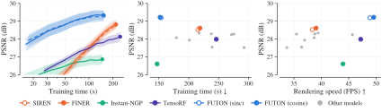
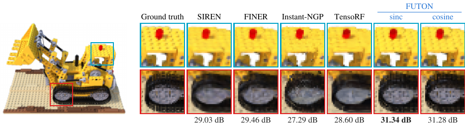
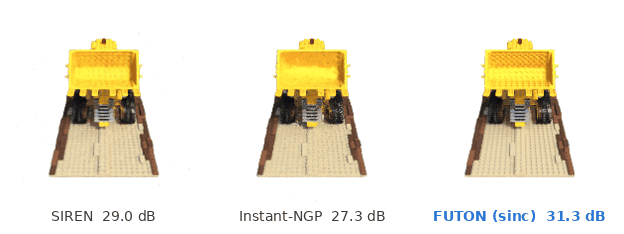
Super-resolution¶
The 100 DIV2K validation images, observed at a quarter of their size. Each image, about 2040 × 1356 pixels, is downsampled 4× with the antialiased bicubic filter of MATLAB's imresize, the standard protocol, and the models see nothing but the result, about 510 × 339 pixels. A field maps the high-resolution coordinates to RGB and is trained through the downsampling operator: a step draws 135 blocks of 8 × 8 low-resolution pixels, as many on every image, and evaluates the field at the high-resolution pixels beneath them (261,360 evaluations, about \(2^{18}\)), downsamples the result with the same filter and takes the L1 distance to the observed pixels, for 1000 steps at about 500k parameters per model. The deep image prior (DIP) trains its convolutional generator through the same operator and joins nearest, bilinear and bicubic interpolation as a reference row. FUTON's grid of components is the low-resolution size, K = (H/4, W/4), its decoder 128 wide, and its rank the largest multiple of 5 within the budget on each image (510 on 0882), since the grid follows the image's size where the baselines' widths do not. Every model's scale and learning rate were chosen on three DIV2K training images (0395, 0431 and 0777) by the mean gain over bicubic, with the L1 loss throughout. FUTON's components and width were chosen on the same images with the sinc basis: the low-resolution size is the only one that beats bicubic there, and a decoder 128 wide gains 0.51 dB over it, short of the 0.70 dB of one 256 wide, which takes 1.6 times the training time and 1.5 times the memory. PSNR and SSIM are computed on the luma channel after shaving a 4-pixel border, LPIPS on RGB, all against the original image.
| Model | #Params (k) | Training time (s) ↓ | Training memory (GB) ↓ | Inference throughput (MPix/s) ↑ | Inference memory (GB) ↓ | PSNR (dB) ↑ | SSIM ↑ | LPIPS ↓ |
|---|---|---|---|---|---|---|---|---|
| Nearest | – | – | – | – | – | 26.73 ± 0.05 | 0.734 ± 0.001 | 0.459 ± 0.005 |
| Bilinear | – | – | – | – | – | 27.53 ± 0.05 | 0.757 ± 0.002 | 0.368 ± 0.003 |
| Bicubic | – | – | – | – | – | 28.10 ± 0.06 | 0.775 ± 0.002 | 0.353 ± 0.003 |
| DIP | 505.3 | 95.6 | 8.79 | 124.3 | 2.75 | 27.31 ± 0.06 | 0.735 ± 0.002 | 0.446 ± 0.004 |
| RFF | 500.0 | 52.1 | 2.46 | 14.0 | 0.97 | 26.05 ± 0.08 | 0.703 ± 0.002 | 0.496 ± 0.003 |
| PE-MLP | 502.1 | 59.8 | 2.56 | 14.4 | 0.87 | 20.62 ± 0.25 | 0.573 ± 0.006 | 0.613 ± 0.005 |
| MFN | 501.8 | 81.4 | 8.03 | 12.2 | 3.42 | 27.10 ± 0.09 | 0.735 ± 0.002 | 0.454 ± 0.002 |
| SIREN | 500.6 | 61.7 | 3.83 | 14.8 | 0.88 | 27.97 ± 0.07 | 0.763 ± 0.002 | 0.407 ± 0.002 |
| FreSh (SIREN) | 500.6 | 65.6 | 3.83 | 14.7 | 0.88 | 27.64 ± 0.07 | 0.756 ± 0.002 | 0.418 ± 0.002 |
| Gauss | 500.6 | 64.8 | 4.26 | 14.8 | 0.88 | 24.71 ± 0.10 | 0.584 ± 0.005 | 0.557 ± 0.006 |
| WIRE | 502.0 | 56.9 | 4.22 | 14.7 | 0.93 | 24.99 ± 0.09 | 0.670 ± 0.003 | 0.546 ± 0.003 |
| FINER | 500.6 | 61.6 | 3.83 | 14.7 | 0.88 | 28.12 ± 0.07 | 0.751 ± 0.001 | 0.424 ± 0.003 |
| Instant-NGP | 505.2 | 2.9 | 0.43 | 187.6 | 0.31 | 28.22 ± 0.08 | 0.763 ± 0.002 | 0.394 ± 0.002 |
| TensoRF | 500.4 | 40.5 | 2.37 | 29.7 | 0.89 | 27.54 ± 0.05 | 0.750 ± 0.002 | 0.418 ± 0.002 |
| GA-Planes | 501.3 | 29.7 | 3.22 | 38.0 | 0.65 | 27.93 ± 0.06 | 0.756 ± 0.001 | 0.416 ± 0.002 |
| F-INR (SIREN) | 501.8 | 6.3 | 2.84 | 104.2 | 1.45 | 23.13 ± 0.18 | 0.627 ± 0.005 | 0.589 ± 0.003 |
| FUTON (sinc) | 498.8 | 9.3 | 0.83 | 78.9 | 0.70 | 28.59 ± 0.10 | 0.784 ± 0.003 | 0.382 ± 0.002 |
| FUTON (cosine) | 498.8 | 9.2 | 0.83 | 78.9 | 0.70 | 28.21 ± 0.20 | 0.778 ± 0.004 | 0.390 ± 0.002 |
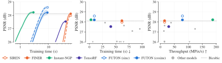
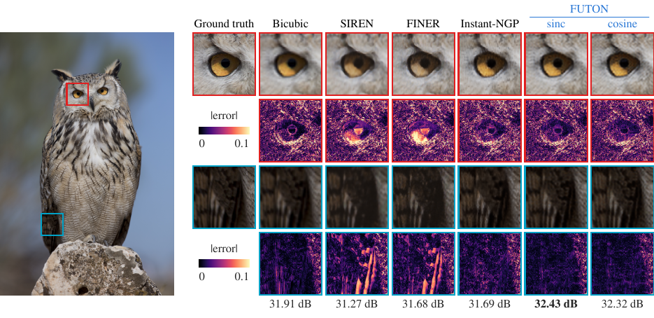
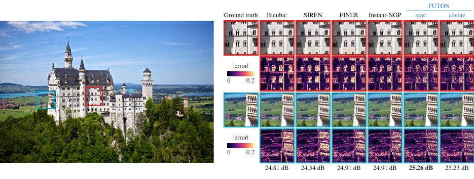
Super-resolution is the hardest task here for every model: nothing but the low-resolution image is seen, so the margins are fractions of a decibel and most fields lose to bicubic interpolation. FUTON (sinc) beats bicubic on 97 of the 100 images, by 0.49 dB on average and 1.36 dB on 0882, and leads PSNR and SSIM. Instant-NGP, the fastest model to train here at 2.9 s, gains 0.12 dB on average but beats bicubic on only 53 images, and FINER, 0.02 dB, on 42. FUTON (cosine) beats bicubic on 89 images, but on four its output falls 2 to 17 dB below it, which brings its mean down to 28.21 dB, the hash grid's level: it fits the observed pixels there as closely as anywhere, yet carries artifacts at high resolution that the downsampling does not show, on 0843 21.4 dB against bicubic's 38.8. The sinc basis fails so on one image, 0852, by 4.7 dB. The deep image prior and TensoRF do not beat bicubic on average, and F-INR (SIREN), the second fastest to train at 6.3 s, ends below it on every image, by 5.0 dB on average. The deep image prior is still rising slowly when its 1000 steps end, so its paper's margin over bicubic needs a budget the protocol does not give it. Bicubic keeps the best LPIPS, by 0.030 over FUTON (sinc), which suggests the fields buy their PSNR at edges rather than in texture, the one thing a single low-resolution image cannot teach. PE-MLP is the one model the protocol does not serve: the tuning images chose a rate of 3e-4 for it, at which it ends 7.5 dB below bicubic on average and below 20 dB on 44 of the 100 images. Three of the 100 images, 0801, 0804 and 0882, served to develop the protocol; without them (results/super_resolution/table_held_out.md), FUTON (sinc) scores 28.54 dB, Instant-NGP 28.17 and bicubic 28.06, and FUTON (sinc) beats bicubic on 94 of the 97 images.
Reading the numbers¶
- Accuracy. FUTON leads PSNR, SSIM and LPIPS on images, the cosine basis by 1.42 dB over MFN, the strongest baseline, and the sinc basis by 0.72 dB, ahead of every baseline on 22 and 20 of the 24 images. On volumes it has the best mean IoU, 99.95 % against 99.91 % for RFF, the best IoU on three of the five shapes, and it passes 99.8 % on every shape after 4.3 s of training, where GA-Planes, the only other model to get there, takes 11.4 s. On radiance fields it leads FINER by 0.60 dB (cosine) and 0.58 dB (sinc) and six of the eight scenes, and on super-resolution FUTON (sinc) leads Instant-NGP by 0.37 dB and every baseline on 86 of the 100 images.
- Speed. Instant-NGP is the fastest model to train on every task: 3.6 s against FUTON's 5.4 s on images, 2.6 s against 7.6 s on volumes, 147 s against 152 s on radiance fields and 2.9 s against 9.2 s on super-resolution. FUTON follows it on images and radiance fields, and on the other two tasks a few models train faster at a lower accuracy: F-INR (SIREN) and TensoRF on volumes and F-INR (SIREN) on super-resolution. FUTON's training memory is the lowest on images and radiance fields, 0.67 and 1.88 GB, and close to the lowest on volumes and super-resolution, 0.53 and 0.83 GB. The hash grid is a PyTorch port of tiny-cuda-nn's, without the fused CUDA kernels, gathering every level in one batched pass; FUTON is plain PyTorch, and every model is compiled.
- At inference Instant-NGP is again the fastest on images (198 against FUTON's 178 megapixels per second) and on super-resolution (188 against 79), and TensoRF on volumes (191 megavoxels per second, Instant-NGP 158, FUTON 123). A radiance field renders a whole view in one pass in 20 to 30 ms, 34 to 50 frames per second, and FUTON is the fastest, at 49.6 and 48.9 against 47.2 for TensoRF, 45.7 for GA-Planes and 44.0 for Instant-NGP, in the least memory, 2.04 GB, which TensoRF and GA-Planes match: nearly all of it is the ray marcher's buffers for the view's 40,000 rays.
- The two bases cost the same to train and to evaluate. The cosine basis is the better one on images, by 0.70 dB, the two tie on volumes and on radiance fields, 0.03 dB apart, and the sinc basis is ahead in super-resolution, by 0.38 dB, where the cosine basis fails on four images.
Checks against the literature¶
Where the protocol meets a published one, the numbers agree, allowing for the shorter radiance-field schedule. The super-resolution pipeline reads DIV2K's own low-resolution images, which the forward operator reproduces from the originals to 57 dB, and its bicubic baseline is 26.66 dB in the EDSR and LIIF convention (RGB, a 10-pixel shave), the published value; the 28.10 dB above is the same baseline on luma with a 4-pixel shave. The radiance-field protocol is FINER's, which trains for 37,500 steps; at our 25,000 and our 75k budget, SIREN lands 0.3 dB and FINER 0.6 dB below that paper's table on average, by at most 1.1 dB on a scene, and our PE-MLP and WIRE are stronger than its. The deep image prior's margin over bicubic, a decibel at 4× in its paper, needs more steps than the protocol gives it, as noted above. The hash grid's low radiance-field score is what a 75k budget leaves it: its tables hold 2^11 entries per level, 256 times fewer than in its paper.
The ablations take FUTON apart, and Reproducing the paper has the commands that produced every number above.